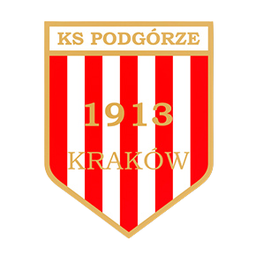

KS Podgórze Kraków
| Data założenia | 1913 |
|---|---|
| Debiut w najwyższej lidze | 1933 |
| Liga | Klasa A, grupa: Kraków III |
| Data założenia | 1913 |
| Adres | ul. Dekerta 21, 30-703 Kraków |
| Prezes | Ryszard Ściborowski |
| Trener | Konrad Warczak | Asystent trenera | Łukasz Gorszkow |
Historia
W 1913 roku Rudolf Kropatsch, Władysław Hausner, Wiktor Offen, Wilhelm Majcher oraz Franciszek Kozieł założyli klub sportowy SKS Olimpia, przemianowany w kilka miesięcy później na KS Podgórze. Motywem powstania piłkarskiego klubu sportowego było umożliwienie mieszkańcom Podgórza uprawiania, coraz bardziej popularnego sportu. Tworzyło to wówczas coraz większe poczucie, już i tak silnie rozwiniętego patriotyzmu lokalnego.
Pierwszy stadion Podgórza otwarto 10 lat po powstaniu klubu. Okres największych sukcesów przypadł na lata 30. XX wieku, wtedy to męska drużyna piłkarska grała w ekstraklasie, nazywanej wówczas „Ligą”. Czterech zawodników Podgórza reprezentowało Polskę podczas meczów międzynarodowych (Mieczysław Koczwara, Franciszek Hausner, Antoni Dzierwa).
W czasie II wojny światowej grali oni na emigracji w drużynie Armii Polskiej, która pokonała m.in. Anglię (4:0) i Irak (6:1). Czasy powojenne nie przyniosły już klubowi większych sukcesów. Powstawały (szczególnie w latach 50.) liczne sekcje sportowe, ale trzeba było czekać dopiero do lat 90., aby klub mógł znów odnosić sukcesy. Stało się to za sprawą piłkarskiej drużyny kobiecej i jej występów w I lidze kobiet.
źródło